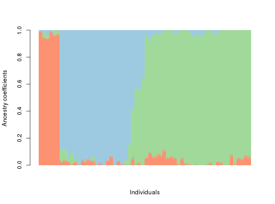

This function converts data sets imported from the STRUCTURE and the TESS 2.3 input file formats to the tess3 formats.
tess2tess3(dataframe = NULL, TESS = TRUE, diploid = TRUE, FORMAT = 1, extra.row = 0, extra.column = 0)
TRUE if the TESS 2.3 format is used. If TRUE, the
geographic coordinates (Longitude, Latitude) must be binded left to the genetic marker matrix.TRUE for diploids and FALSE for haploids.TESS
is set to TESS = FALSE. Missing data are encoded as "-9" or any negative valuesAn object of class list containing a genotype matrix and individual geographic coordinates.
X a matrix of genotypes with values 0,1,2 or NA.
coord a matrix of geographic coordinates.
library(tess3r) data(durand09) d09tess3 <- tess2tess3(durand09, FORMAT = 2, extra.column = 1)#> Input file in the TESS format. The genotypic matrix has 600 individuals and 100 markers. #> The number of extra rows is 0 and the number of extra columns is 1 . #> The input file contains no missing genotypes. #>#> Computing spectral decomposition of graph laplacian matrix: done #> Main loop with 4 threads: #> : done #> Computing spectral decomposition of graph laplacian matrix: done #> Main loop with 4 threads: #> : done #> Computing spectral decomposition of graph laplacian matrix: done #> Main loop with 4 threads: #> : done #>Qmatrix <- Gettess3res(obj, K = 3)$Q barplot(Qmatrix, sort.by.Q = FALSE, border = NA, space = 0, xlab = "Individuals", ylab = "Ancestry coefficients")#> Use CreatePalette() to define color palettes. #>